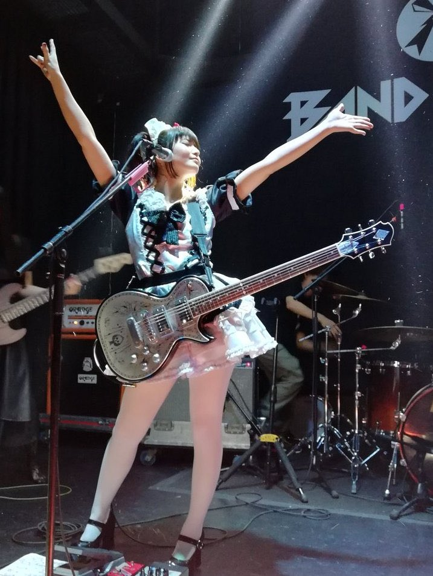

Miku Kobato
About
- Born October 21st 1991 in Kumamoto
- Wanted to be famous from an early age
- Rhythm guitar player for Band-maid
- Before Band-maid was working in a maid cafe
- Avid fan of horse racing and poker
- Has a cat named Tora

Social Media
Instagram: Kobatomiku
Twitter: @miku_bandmaid
Tiktok: Kobatomikucluppo